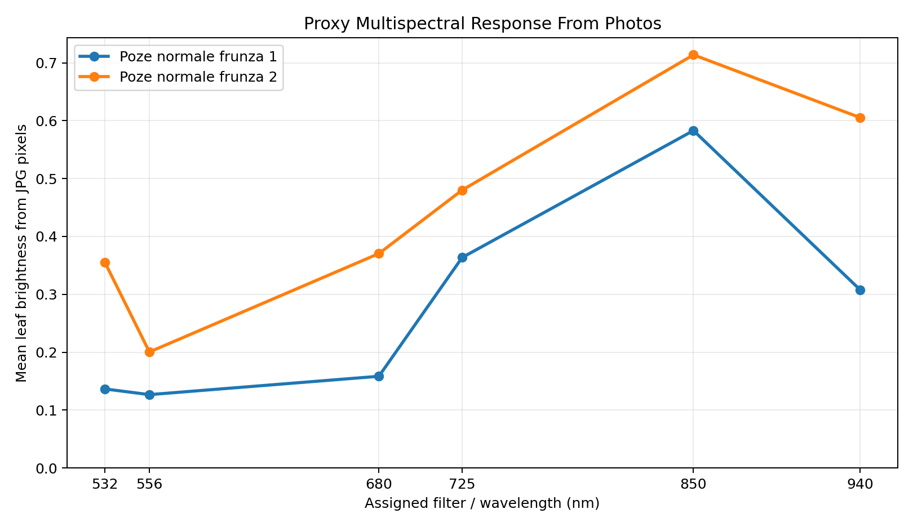
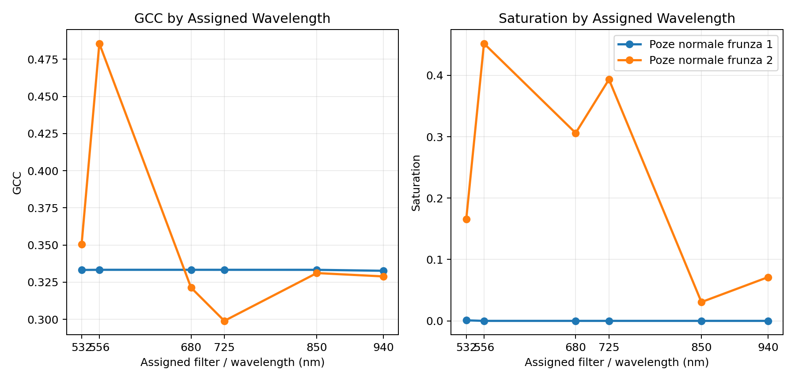
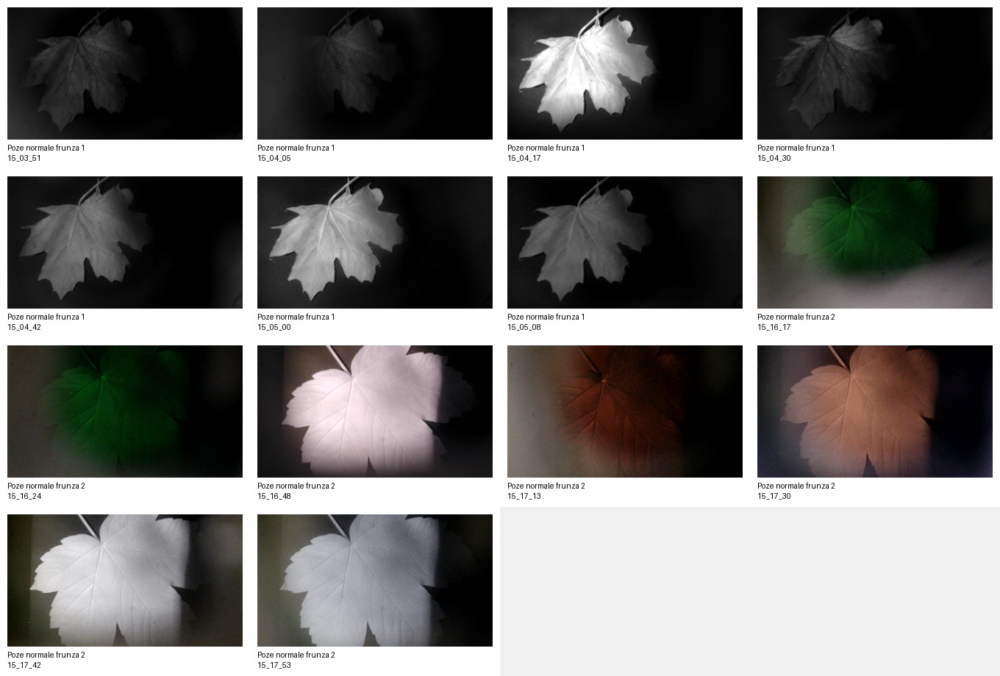
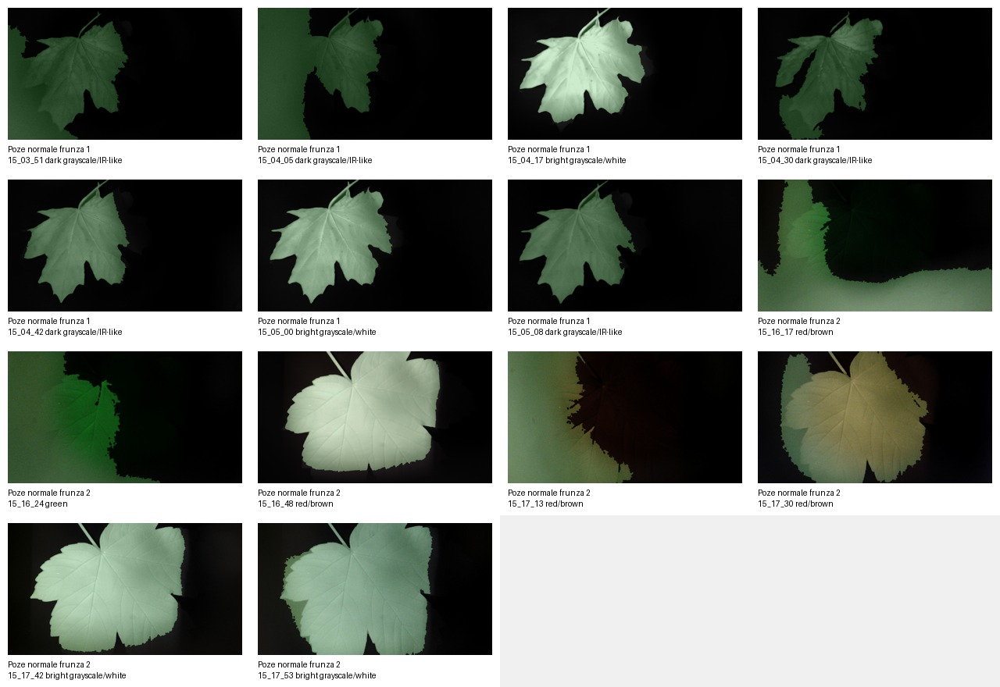

Photos
14
JPG measurements analyzed
Photo groups
2
Two leaf/condition groups
Spectrometer rows
50
OCV catalog entries
Raw spectra
0
Need OceanView CSV export
App-Ready Classification
| Group | Condition | Saturation | GCC | Usability | Class |
|---|
Metric Bars
GCC near 0.333 means neutral gray. Higher saturation means the camera image contains more usable visible color.
Proxy Wavelength Graphs
These are not true spectrometer curves. They use the detected leaf brightness/color from each filtered JPG as a proxy response at the assigned wavelength.
Mean leaf brightness by assigned wavelength

GCC and saturation by assigned wavelength

Photo Group Explorer
How This Becomes An App Feature
| Input | Feature | Use in app |
|---|---|---|
| JPG photo | GCC, ExG, VARI, saturation, brightness | Classify whether the camera image is visible-color useful or filter/IR-like. |
| OCV file name/folder | condition, filter_nm, measurement type | Attach spectrometer measurements to the right leaf group. |
| Future exported CSV | I532, I556, I680, I725, I850, I940 | Compare camera features against spectral response and ratios like 850/680. |
Proof Rule
If saturation < 0.05, treat the photo group as filter/IR-like. If saturation is higher and GCC > 0.34, treat it as visible leaf color signal.
This separates your current groups: Poze normale frunza 1 becomes filter/IR-like, while Poze normale frunza 2 becomes visible leaf color signal.
Original photo contact sheet

Leaf masks used for numeric features
